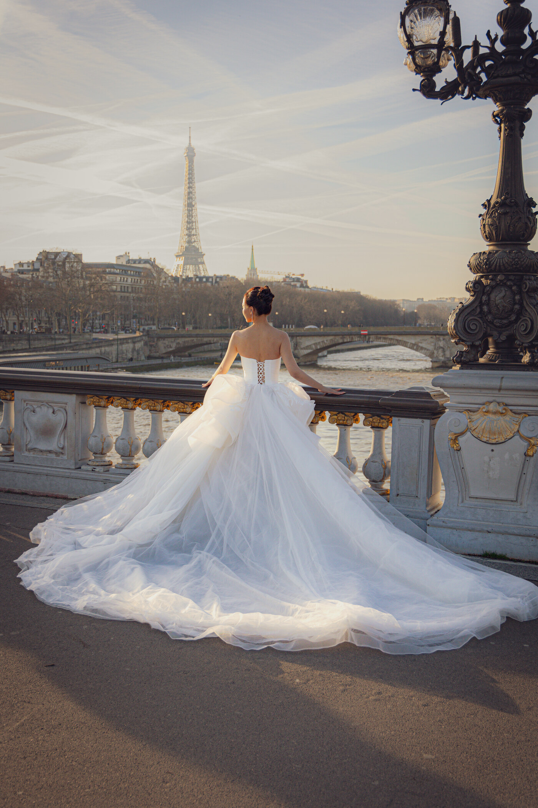
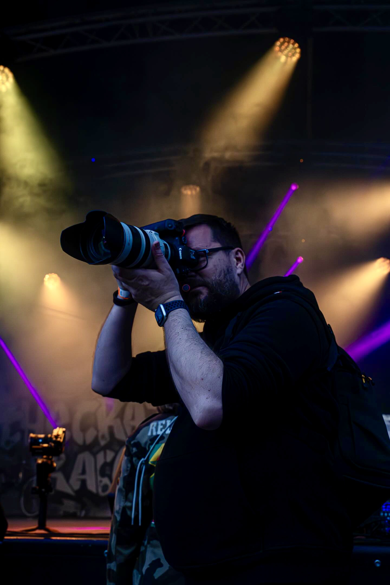
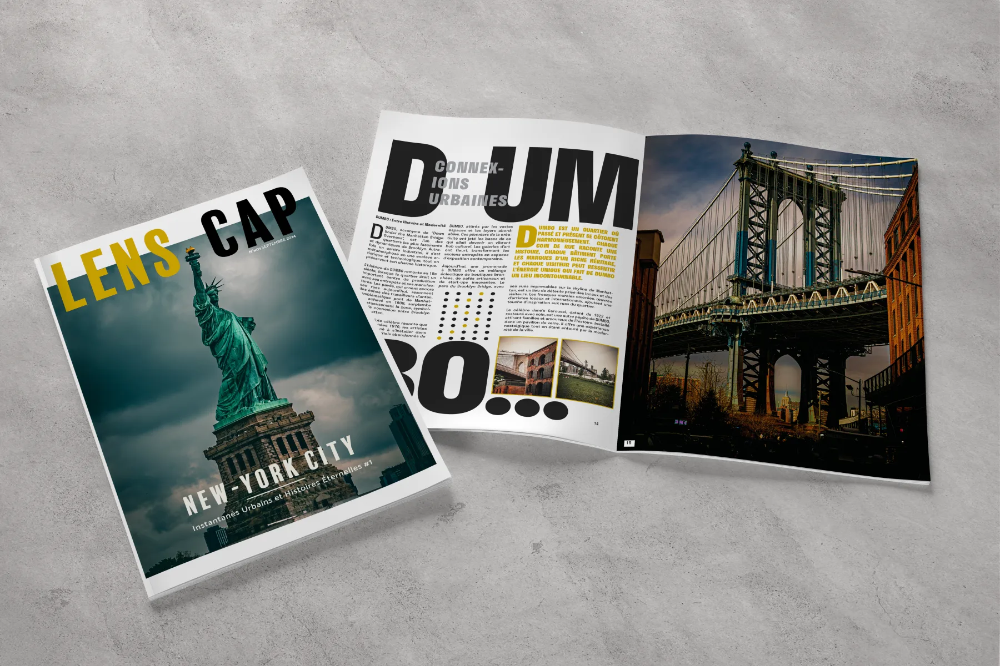
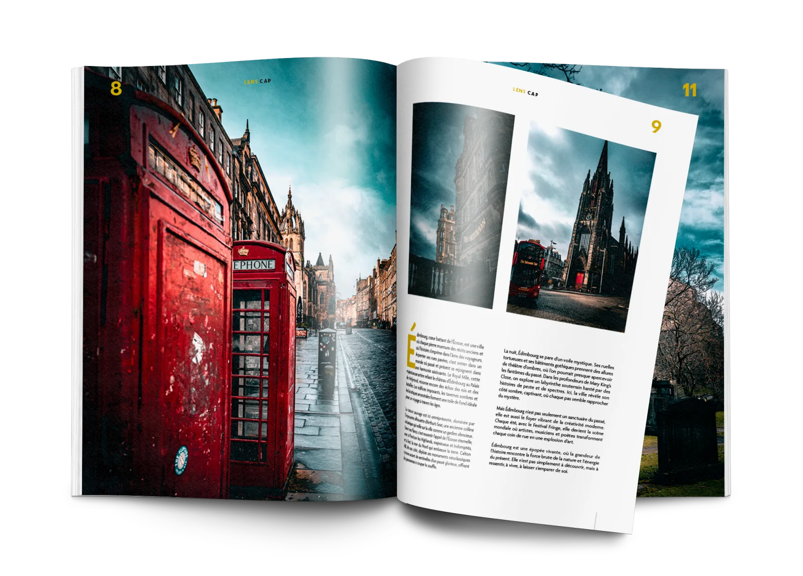

Particuliers
Mariage, famille, portrait, baptême et anniversaire. Une présence discrète pour des images naturelles.
Voir les formulesArtisan photographe & graphiste — depuis 2010
Photographe & graphiste
Val-d'Oise · Île-de-France
Mariages · Portraits · Reportages · Événements

Travaux choisis
Des instants vécus, des gestes, des regards. Cliquez sur une image pour l'agrandir.
Visuels conçus et réalisés sans IA générative.
Reportage de terrain
J'interviens au plus près des missions et des déplacements officiels, dans le respect des contraintes de communication.
Ce que je fais
Particuliers, collectivités, entreprises et artistes.
Mariage, famille, portrait, baptême et anniversaire. Une présence discrète pour des images naturelles.
Voir les formulesMissions de terrain, déplacements officiels, portraits et événements, avec des délais tenus.
Voir les prestationsMagazines, rapports, campagnes et identités visuelles.
Voir les prestations
Derrière l'objectif
Je suis Wilfried Koba, photographe et graphiste professionnel depuis plus de quinze ans.
Depuis 2010, j'ai couvert plus de 200 concerts et travaillé sur des événements privés comme sur des missions institutionnelles de terrain. Ce parcours m'a appris à observer vite, à rester discret et à livrer des images qui servent vraiment leur sujet.
Quelques références Ministère de l'Intérieur, Présidence de la République, Cabinet du Préfet du Val-d'Oise, villes de Magny-en-Vexin, Villiers-le-Bel, Arnouville, Cergy et Garges-lès-Gonesse.
Projet personnel · Auto-édition
Un magazine photo indépendant consacré au voyage, à la ville et au regard documentaire.

Instantanés urbains et histoires éternelles.

D'Édimbourg à l'île de Skye.
Vos mots
« Plus qu'une journée de shooting, c'est un vrai moment de vie que nous avons partagé avec Wilfried. Il a su nous mettre à l'aise et le résultat dépasse nos espérances. »
Emma, Rémi, Hortense & Hector
« Les photos sont vraiment à l'image de ce que j'avais imaginé, elles sont magnifiques. Vous avez su saisir chaque instant et le résultat est parfait. »
Angélique
« Les photos sont superbes. Merci beaucoup de nous avoir permis de garder un souvenir de ce moment unique pour notre famille. »
Une famille Juin 2024
« C'est magnifique ! Les filles sont trop contentes et nous aussi. Beau travail, vraiment, j'adore. »
Une famille Juin 2024
Un projet en tête ?
Mariage, portrait, reportage, événement, tirage ou graphisme : décrivez-moi votre besoin.
Basé en Île-de-France, je me déplace dans toute la région ainsi que dans l'Eure (27) et l'Oise (60).
koba.wilfried@gmail.com